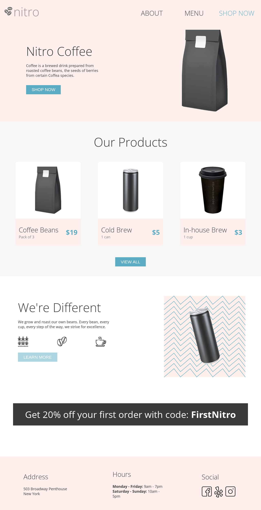
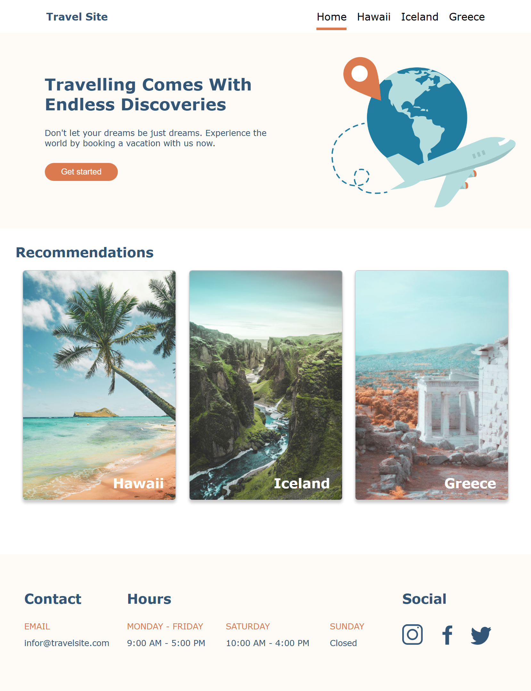

I’m a lifelong learner specializing in Software Engineering and
emerging technologies. I enjoy working on projects that blend
problem-solving with real-world impact, turning innovative ideas
into tangible solutions.
Beyond coding, I spent five years in consulting, where I tackled all
kinds of challenges—some technical, some strategic, and some that
just needed a fresh perspective. Along the way, I learned how to
approach problems strategically, collaborate with diverse teams, and
create solutions that drive meaningful results.
Cybersecurity Projects
Software Engineering Projects
TravelTailor
A responsive web travel application, featuring a form with a
dropdown and calendar selection used to suggest tourist
attractions based on Canadian province and travel season.
Designed the backend to dynamically display recommendations by
converting and storing data from a Kaggle spreadsheet.
Tech Stack: React, SCSS, Node.js, Express, Knex.js, and MySQL.

Nitro Coffee Shop
A responsive coffee shop website, comprised of 2 interconnected
pages—a landing page and a menu page, designed for coffee
lovers.
The Landing page highlights the coffee shop's unique offerings,
while the Menu page features a curated selection of products
that customers could enjoy.
Tech Stack: HTML, SCSS, and JavaScript.

Travel Site
A responsive travel website with multiple interconnected pages,
showcasing dynamic component styling to take travellers in an
exciting journey.
This project consists of 4 webpages: the home page and 3
destination pages that offer a fun and engaging travel
experience.
Tech Stack: HTML, SCSS, and JavaScript.
Band Site
A responsive band website that highlights dynamic component
styling to promote the newly-rising pop rock band called "The
Bees Knees".
The website features 2 linked pages that provide insights into
the band's journey to fame and key promotional content.
Tech Stack: HTML, SCSS, and JavaScript.
Scope, Goals, and Risk Assessment
Overview:
Botium Toys initiated an internal IT audit after detecting
security and compliance risks affecting key assets.
Role:
Cybersecurity Analyst
Scenario
Botium Toys, a growing U.S. toy company with an expanding online
market, initiated an internal IT audit to strengthen its security
posture and ensure compliance with industry and international
regulations. Using the NIST Cybersecurity Framework, the IT manager
outlined the audit scope, goals, and risk assessment. The task is to
review this information and complete a controls & compliance
checklist to identify security gaps, risks, and areas for
improvement.
Scope
The scope of this audit is defined as the entire security program at
Botium Toys. This includes their assets like employee equipment and
devices, their internal network, and their systems. The requirement
is to review Botium Toys' assets and evaulate existing controls and
compliance practices.
Goals
Assess existing assets and complete the controls and compliance
checklist to determine which controls and compliance best practices
that need to be implemented to improve Botium Toys’ security
posture.
Risk Assessment
Risk Description
Currently, there is inadequate management of assets. Additionally,
Botium Toys does not have all of the proper controls in place and
may not be fully compliant with U.S. and international regulations
and standards.
Control Best Practices
The first of the five functions of the NIST CSF is Identify.
Botium Toys will need to dedicate resources to identify assets so
they can appropriately manage them. Additionally, they will need
to classify existing assets and determine the impact of the loss
of existing assets, including systems, on business continuity.
Risk Score
On a scale of 1 to 10, the risk score is 8, which is fairly high.
This is due to a lack of controls and adherence to compliance best
practices.
Recommendations
Implement Principle of Least Privilege Access
Set-up password management system
Assess current assets and legacy systems, and identify possible
risks
Create an action plan to apply preventative / corrective measures
to all assets, from highest to lowest risk priority
Identify all control categories (Administrative/Managerial,
Technical, Physical/Operational) and their associated risks. Then,
include them in the action plan
Collaborate with internal teams / employees to determine any
additional risks on existing assets
DNS and ICMP packet analysis using tcpdump to determine the root
cause of a network connectivity issue.
Role:
Cybersecurity Analyst
Scenario
You are a cybersecurity analyst working at a company that
specializes in providing IT services for clients. Several customers
of clients reported that they were not able to access the client
company website www.yummyrecipesforme.com, and saw the error
“destination port unreachable” after waiting for the page to load.
The task involves analyzing the situation to determine which network
protocol was affected during this incident.
Problem Summary
Accessing the company website returned a “destination port
unreachable” error. The UDP message requesting for an IP address
with the domain name "www.yummyrecipesforme.com" did not reach the
DNS server on port 53, preventing the destination IP from receiving
the request.
Findings
Several customers reported their inability to access the client
customer website and got error “destination port unreachable”
after waiting for the page to load
Based on the tcpdump logs, the error started at 1:24pm (similar
errors found at 1:27pm and 1:28pm)
When the source IP 192.51.100.15 (browser) sent a connection to
the destination IP 203.0.113.2 (DNS server), it generated a query
identification number: 35084, and an "A?" flag indicating an A
record associated with the domain name mapping to an IP address
Tcpdump logs show an ICMP error response “udp port 53 unreachable”
This issue occurred because that there was no service listening on
the receiving DNS port, blocking the domain name resolution and
preventing subsequent HTTPS requests from reaching the web server.
Analysis
The incident started at 1:24pm and similar error messages were
logged at 1:27pm and 1:28pm.
The IT team became aware of the incident as several customers
reported that they were unable to access the client company website
"www.yummyrecipesforme.com" and saw error “destination port
unreachable” after waiting for the page to load.
To investigate the incident, the IT department attempted to visit
the client company website and received the same error message as
reported. The team also tried to troubleshoot the issue using the
network analyzer tool, tcpdump, and attempted to load the website
again. Lastly, they used the logs from the network analyzer tool to
analyze the error messages.
TCP/HTTP log analysis using Wireshark to identify the cause of a
network interruption.
Role:
Cybersecurity Analyst
Scenario
You work as a security analyst for a travel agency that advertises
sales and promotions on the company’s website. An automated alert
indicated a problem with the company's web server, followed by
connection timeout errors. Packet capture revealed an abnormally
high volume of TCP SYN requests from an unfamiliar IP address that
overwhelmed the server's capacity to respond to legitimate traffic.
The server was taken offline to recover, and the source IP was
temporarily blocked at the firewall. The incident required
escalation due to the likelihood of a SYN flood attack and the need
for longer-term mitigation to prevent recurrence.
Findings
An automated alert was received from the monitoring system
indicating a problem with the company's web server
Upon visiting the company's website, a connection timeout error
message is displayed on the browser
Packet capture using Wireshark revealed that usually high volume
of TCP SYN packets coming from source IP 203.0.113.0
Initial requests from the malicious source IP 203.0.113.0
completed the 3-way TCP handshake, but subsequent SYN requests
exhausted the company web server's capacity to respond to
legitimate traffic
Company users (source IP 194.51.100.0/24) were able to access the
website prior to the attack, but began experiencing connection
timeouts when the malicious activity started
Logs showed [RST, ACK] packets and HTTP Gateway Timout responses
resulting from unacknowledged SYN requests
Analysis
Network Interruption Identification
The logs show a connection timeout response from the company’s
website to the user’s browser when trying to access the website,
indicating a SYN flood attack. If not addressed promptly, this
event could be posing a much bigger risk.
Log detection, log analysis, and containment have been performed
to temporarily prevent further damage on the company’s assets by
taking the server offline to allow recovery and restore normal
operations, as well as configuring the company’s firewall to block
the IP address that sends the abnormal volume of SYN requests.
Website Malfunction Analysis
Normally, a TCP three-way handshake occurs with SYN → SYN-ACK →
ACK packets to establish a connection. During the incident, a SYN
flood attack sent an abnormally high volume of SYN packets to the
company’s web server, exhausting its resources and preventing
legitimate TCP connections. Packet logs show that the malicious IP
repeatedly sent SYN packets, resulting in RST-ACK and Gateway
Timeout responses and disrupting normal web service operations.
Security Incident Report
Overview:
Tcpdump log analysis to investigate, identify, document, and
recommend a solution for a security issue affecting access to the
company's main webpage.
Role:
Cybersecurity Analyst
Scenario
You are a cybersecurity analyst for yummyrecipesforme.com, a website
that sells recipes and cookbooks. A former employee has decided to
lure users to a fake website with malware.
The objective of this investigation is to document the incident in
detail, identify the network protocols used to establish the
connection between the user and the website, and recommend a
security action to take to prevent brute force attacks in the
future.
Findings
Multiple customers reported to yummyrecipesforme's helpdesk that
the company website prompted a file download, redirected to a
different URL, and caused their computers to slow down
The website owner was unable to access the admin panel and
contacted the website hosting provider for assistance
The security team created a sandbox environment and ran the
network protocol analyzer (tcpdump) to observe suspicious website
behavior
The web server was impacted by a brute force attack, as the
disgruntled employee easily guessed the administrative account's
default password
No preventive controls were in place to prevent such attacks
Analysis
Network Protocol Analysis
The network protocol involved in the brute force attack was HTTP.
Since the website was using an unsecured protocol, it was easier
for the malicious actor to perform an attack by accessing the
admin panel and changing the source code.
Incident Documentation
Several customers reported that the company’s website prompted a
file download, redirected them to "greatrecipesforme.com", and
caused their computers to slow down. Investigation identified a
brute force attack that allowed the attacker to access the website
and modify its source code.
The security team reproduced the issue in a sandbox environment
using a network protocol analyzer, confirming the download prompt
and subsequent redirection.
Tcpdump logs showed that the browser resolved
"yummyrecipesforme.com" via DNS, requested the webpage, initiated
the malware download, and then resolved and accessed the malicious
website ("greatrecipesforme.com"), completing the HTTP request.
Further analysis revealed that a malicious JavaScript code was
embedded in the website's source code, prompting users to download
an executable file. The use of HTTP left the connection unsecured,
increasing vulnerability to attacks, and no controls were in place
to prevent brute force attempts.
Recommendations
Implement HTTPS to secure connections using TLS/SSL certificates
Enforce strong password policies, including complex password
requirements and periodic changes
Disallow reuse of previous passwords to enhace account security
Require 2-factor authentication (2FA) or multi-factor
authentication (MFA) on company websites
Monitor login attempts and limit the number of failed attempts to
prevent brute force attacks
Security Risk Assessment
Overview:
A social media organization initiated a network hardening review
following a data breach incident.
Role:
Cybersecurity Analyst
Scenario
A social media organization experienced a major data breach that
exposed customer personal information. In response, the organization
wants to implement strong network hardening practices that can be
performed consistently to prevent attacks and breaches in the
future.
A network assessment identified four major vulnerabilities,
including shared employee passwords, default administrative
credentials, lack of firewall traffic filtering rules, and the
absence of multi-factor authentication (MFA). Without remediation,
these vulnerabilities significantly increase the likelihood of
recurring breaches and other security incidents.
Identified Security Risks
Shared employee passwords
– The organization's employees share passwords, increasing
the risk of unauthorized access.
Default admin credentials
– The admin password for the database is set to the
default, making the database highly vulnerable to brute force
attacks and potential data leaks.
Absence of firewall rules
– The firewalls do not have rules in place to filter
inbound and outbound network traffic, exposing the network to
malicious activity.
Lack of multi-factor authentication (MFA)
– Multi-factor authentication (MFA) is not used,
increasing the risk of unauthorized access to sensitive data.
Network Hardening Recommendations
Enforce strong password policies with regular updates
– This ensures that each user has a complex, unique
password, distinct from the administrative account, that is
changed regularly.
Use port filtering with firewall maintenance
– Port filtering restricts company network access only to
authorized IP addresses and secure websites, while firewall
maintenance ensures that firewall rules remain current and
effective.
Implement multi-factor authentication (MFA)
– This requires both user password and a one-time passcode
(OTP) to grant access to authorized users only.
Security Incident Reporting Using the NIST Cybersecurity Framework
(CSF)
Overview:
Network incident analysis and reporting using the NIST
Cybersecurity Framework (CSF).
Role:
Cybersecurity Analyst
Scenario
A multimedia company recently experienced a distributed
denial-of-service (DDoS) attack that disrupted internal network
operations for two hours.
The attack involved a flood of ICMP packets that overwhelmed the
network services and prevented access to internal resources. The
incident management team responded by blocking incoming ICMP
packets, stopping all non-critical network services offline, and
restoring critical network services.
Investigation later confirmed that the attack exploited an
unconfigured firewall, allowing the malicious attacker to penetrate
the company network.
Analysis using NIST CSF
Identify
The investigation revealed that an unconfigured firewall was used
by the malicious actor to exploit the company network with DDoS
attacks, specifically the Ping of Death. Additionally, the absence
of intrusion detection and prevention systems prevented timely
detection and alerting of the attack.
Protect
The security team strengthened the company's internal networks by
implementing a new firewall to limit the rate of incoming ICMP
packets, a source IP verification to check for spoofed IP
addresses on incoming ICMP packets, a network monitoring software
to detect abnormal traffic patterns, and an IDS/IPS system to
filter ICMP traffic.
Detect
The security team implemented an IDS/IPS system to filter incoming
ICMP traffic based on suspicious characteristics / patterns and
for better alerting when malicious attacks occur.
Additionally, the organization can leverage SIEM dashboards and
tools, tcpdump logs, and network log analyzer to monitor malicious
activities.
System logging and monitoring, combined with security hardening
procedures such as regular software updates / patches, disabling
unused ports, reducing access permissions, and using MFA, can help
identify abnormal network behavior and ensure that only authorized
users have access to the internal network.
Respond
To address the incident and avoid further impact, the security
team blocked the incoming ICMP packets, took all non-critical
network services offline, and restored critical network services.
The team also deployed a new firewall to limit the rate of
incoming ICMP packets, enabled a source IP verification to check
for spoofed IP addresses, implemented a network monitoring
software to detect abnormal traffic patterns, and activated an
IDS/IPS system to filter suspicious ICMP activity.
Recover
The security team successfully restored normal network operations
within 2 hours by performing thorough investigation and
implementing the necessary controls to stop the DDoS attacks from
compromising the internal network.
To improve response and recovery for future incidents, the
organization implemented an IDS/IPS system to enhance detection,
monitoring, and response to similar attacks. In addition, the use
of SIEM tools, tcpdump logs, and network log analyzer supports
faster and more effective incident resolution.